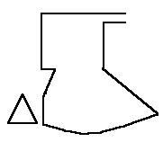

According to the typology given in Nockert, Type 1 Hoods are typified as
"Hood and liripipe cut in one piece. Tailored neck seam. Large cape (about 30 cm long) with diagonally cut line in the center, front and back. Gore inserted in the middle of both front and back. Wide neck (65 cm approx). Long liripipe (90 cm). Liripipe 3.5 cm wide."
There is one example of this type of hood; the Bocksten hood.
Return to Contents
Some Clothing of the Middle Ages, by I. Marc Carlson, Copyright 1996 This code is given for the free exchange of information, provided the Author's Name is included in all future revisions, and no money change hands-